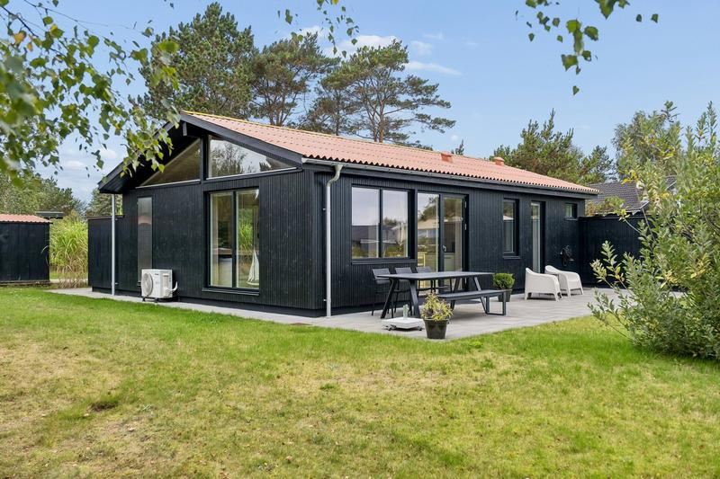

200 m-krav: opfylder ikke 1,40 mio. 4t 37mHalvrebene 45, Als (Hadsund)
opfylder ikke- Pris
- 1.395.000 kr.
- Bolig / grund
- 70 m² / 1.222 m²
- Køretid
- ca. 4 t 37 min (367 km)
- Vand
- 3. række fra Kattegat (mæglerens oplysning)
- Nærmeste bolig*
- 34 m
- Boliger ≤200 m*
- 98
- Sikkerhed
- høj
98 mulige boliger (bygninger på mindst 25 m²) inden for 200 m; nærmeste ca. 34 m væk, regnet uden bygninger tættere end 30 m, som kan være husets egne. Kilde: OpenStreetMap. Desuden 3 bygning(er) inden for 30 m, som kan være husets eget anneks/udhus.
200 m-krav: opfylder ikke1,40 mio.🚗 4t 37m
Halvrebene 45, Als (Hadsund)
Danmark · Kattegat-kysten ved Als, Hadsund · fundet 2026-10-23
- Pris
- 1.395.000 kr.
- Bolig / grund
- 70 m² / 1.222 m²
- Køretid hjemmefra
- ca. 4 t 37 min (367 km)
- Afstand til vand
- 3. række fra Kattegat (mæglerens oplysning)
- Nærmeste anden bolig*
- 34 m
- Mulige boliger inden for 200 m*
- 98
- Sikkerhed i vurdering
- høj
Begrundelse for 200 m-vurderingen
98 mulige boliger (bygninger på mindst 25 m²) inden for 200 m; nærmeste ca. 34 m væk, regnet uden bygninger tættere end 30 m, som kan være husets egne. Kilde: OpenStreetMap. Desuden 3 bygning(er) inden for 30 m, som kan være husets eget anneks/udhus.
Se annonce ↗* egne målinger på kortdata – se "Om data og målinger".